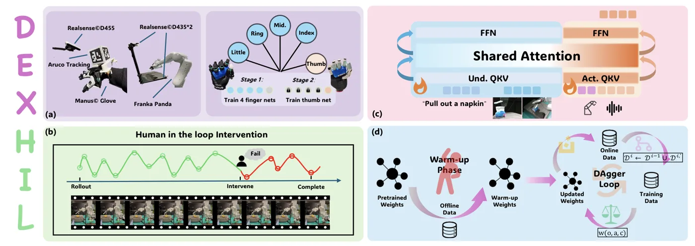
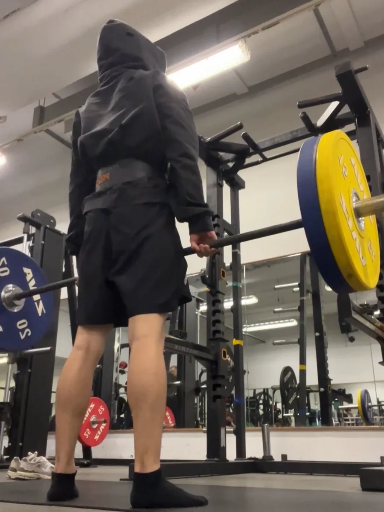

Yuxuan Zhao 赵宇轩
I am a Robotics Research Engineer specializing in embodied intelligence. I received an MPhil in Mechanical Engineering (Robotics and Control) and a BEng in Mechanical Engineering and Computer Engineering from the Hong Kong University of Science and Technology. During my master's studies, I was advised by Prof. Hongyu Yu, focusing on vision-based tactile sensing for improved robotic manipulation. During my undergraduate studies, I worked closely with Prof. Ling Shi and Prof. Lilong Cai.
My research focuses on robot learning and control, with particular interests in vision-language-action models & latent world action model, RL post-training for humanoid loco-manipulation.

News
[2026] DexHiL was accepted to IEEE/RSJ International Conference on Intelligent Robots and Systems (IROS).
[2026] VacGrasp was published at IEEE International Conference on Automation Science and Engineering (CASE).
[2026] HALOMI was submitted to IEEE Robotics and Automation Letters.
[2025] Completed an MPhil in Mechanical Engineering (Robotics and Control) at HKUST.
[2023] Received the Best Final Year Project award at HKUST.
Research
* Equal contribution. † Corresponding author.

VacGrasp: Adaptive Grasping with Modular Retractable Vacuum Grippers and Reinforcement Learning
IEEE International Conference on Automation Science and Engineering (CASE), 2026.
A 4 × 4 retractable vacuum-gripper array and reinforcement learning policy that adapts to object surface geometry.


Model-Free Large-Scale Cloth Spreading With Mobile Manipulation: Initial Feasibility Study
IEEE International Conference on Automation Science and Engineering (CASE), 2023.
A model-free vision-based deformation controller and behavior-tree framework for spreading large-scale cloth with a single-arm legged mobile manipulator.
Selected Projects
Robotic Guide Dog
Final Year Project · Jul 2022 – May 2023 · Best Final Year Project
Mechanical and FEA design, Bezier-curve gait generation, servo motion control, and real-time Mask R-CNN instance segmentation.
Robot kinematics · FEA · Motion control · Computer vision
Compliant Control for a 7-DoF Robotic Arm
Hong Kong Centre for Logistics Robotics (HKCLR), HKSTP
Implemented compliant control for a 7-DoF torque-controlled robotic arm, developed and debugged embedded communication over SPI, CAN, and UART, and designed an ergonomic enclosure for the robot control pendant.
Compliant control · Embedded systems · CAN / SPI / UART · Mechanical design
Student Teams
HKUST RoboMaster Enterprise Team — Embedded drivers, PID/FOC control, and collaborative C++ development.
HKUST Red Bird Racing Team — Electric drivetrain design, CNC manufacturing, and CAN-bus ECU development.
Life Outside Research
A small collection of the activities I enjoy away from the lab.

Fitness


Bouldering